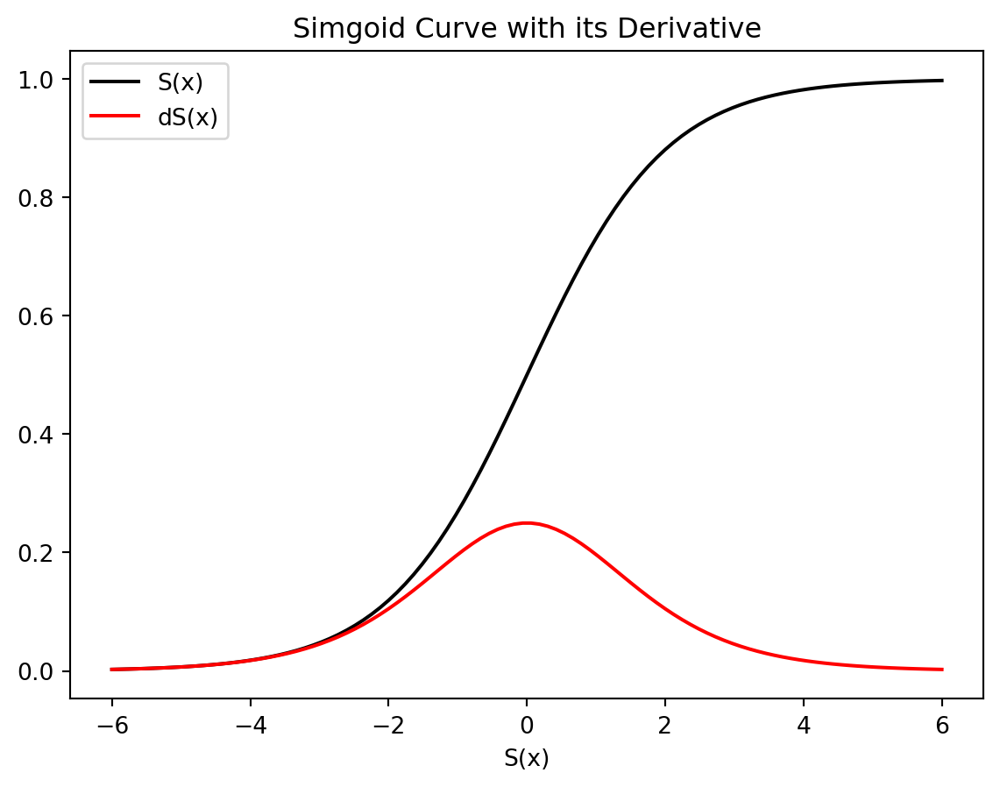

Code
# import packages
import numpy as np
import matplotlib.pyplot as plt
import sympy as S
import matplotlib as mpl
from mpl_toolkits import mplot3d
import matplotlib.font_manager as mfmUnivariable Differentiation
To solve optimization problems, it is required to know about derivatives because derivatives are mostly used 최적화 문제를 풀기위해 미분이 항상 사용되기 떄문에 미분에 대해서 알 필요가 있다.
미분은 최적화 문제를 푼다는 의미는 목적함수를 최적화한다는 말이고 그 과정에서 대부분의 경우 미분을 사용하여 상황에 맞게 목적함수의 극소값이나 극대값을 구하게 된다. 예를 들어, 목적 함수 \(f(x;w)\) 가 매개변수 또는 가중치 \(w\) 에 의해 그 모양이 결정되므로 \(f(x;w)\) 를 최소화하는 최적화 문제를 풀고 싶을 때 \(f(x;w)\) 를 cost function (=\(f(x;w)\) 의 함수) 또는 loss function (=\(f(x;w)\) 의 함수) 으로 잘 정의를 한 후 cost function 또는 loss function을 최소화하는 매개변수 \(w\) 를 구해야한다. 대부분의 경우, Machine Learning (Deep Learning 포함) 에서 미분은 error를 줄이기 위해 사용한다.
목적 함수 \(f(x;w)\) 가 정의 됐을 때 목적 함수의 극 값을 구하기 위해서 변화량을 관찰해야 한다. 비단 목적함수를 포함한 어떤 현상을 함수로 표현할 때에도 문제를 해결하기 위해 변화량을 관찰하는 경우가 빈번하다.
예를 들어, 선풍기 바람의 세기를 조절할 때 입력값은 바람 세기 버튼 출력값은 바람의 세기로 가정한다면 선풍기 바람 세기 입력에 따라 적절한 출력값을 갖도록 조정하고 싶을 것이다. 이때 변화량 관찰이 요구된다. 변화량을 잘 대변하는 것이 함수의 기울기이다. 함수의 기울기는 민감도 (sensitivity)로 표현되기도 한다(wiki). 기울기는 아래와 같이 정의된다.
Definition 1 The slope of line connected with the two points \(P_1(x_1,y_1)\) and \(P_2(x_2,y_2)\) is \[ m=\frac{y_2-y_1}{x_2-x_1} \]
Theorem 1 The point slope equation of line through \(P_1(x_1,y_1)\) with slope \(m\) is \[ y-y_1=m(x-x_1) \]
Theorem 2 The slope intercept euation of line with slope m and y-intercept b is \[ y=mx+b \]
\[ \begin{aligned} \text{기울기}(slope)&=\frac{\text{출력의 변화량}}{\text{입력의 변화량}}\\ &= \text{입력 변화량에 대한 출력 변화량} \\ &=\frac{\Delta output}{\Delta input}\\ &= \text{단위 입력당 출력의 변화량}\\ &= \text{민감도, 평균 변화율 (Rates Of Change), or etc}.\\ \end{aligned} \]
Definition 2 \[ \begin{aligned} \text{평균 변화율}&=\Delta x\text{에 대한} \Delta y\text{의 비율}\\ &=\frac{\Delta y}{\Delta x}=\frac{f(b)-f(a)}{b-a}\\ &=\frac{f(a+\Delta x)-f(a)}{\Delta x} \end{aligned} \]
Definition 3 The tangent line to the curve \(y=f(x)\) at the point \(P(a,f(a))\) is the line through P with slope
\[ m = \lim_{x\to a} f(x) \]
provided that this limit exists.
Definition 4 When \(f: \mathbb{R} \rightarrow \mathbb{R}\) is continuous and differentiable, the derivative of a function \(f\) at a number \(a \in \mathbb R\), denoted by \(f'(a)\), is
\[ \begin{aligned} f'(a) &= \lim_{h\to 0} \frac{f(a+h)-f(a)}{h}\\ &= \lim_{x\to a} \frac{f(x)-f(a)}{x-a} \end{aligned} \]
provided that this limit exists. 이때 위의 함수의 극한값, \(f'(a)\) 라고도 표시하며 점 \(a\) 에서의 \(f(x)\) 의 도함수 (derivative) 라고 한다.

Definition 5 A function \(f\) is differentiable at \(a\) if \(f'(a)\) exists. It is differentiable on an open interval (a,b) [or (a,\(\infty\)), (-\(\infty\),a) or (-\(\infty\),\(\infty\))] if it is differentiable at every number in the interval.
Theorem 3 If \(f\) is differentiable at \(a\), then \(f\) is continuous at \(a\).
Definition 6 The natural number, \(e\) is the number such that \(\lim_{h\to 0} \frac{e^h-1}{h}=1\).
모든 지수 함수 \(f(x)=a^x\) 중에서 \(f(x)=e^x\) 가 점 (0.1) 에서의 접선의 기울기가 \(f'(0)=1\) 이 되는 수를 \(e=2.71828...\) 라고 정의한다.
\(f'(x)\) 는 다음과 같은 기호들로도 흔히 표현된다.
다음의 함수를 미분의 정의를 이용하여 도함수를 계산하시오
Derivative Formula는 모두 미분의 정의를 이용해서 구할 수 있음
Theorem 4
The Power Rule, if \(n\) is any real number, then the power function, \(x^n\) is differentiated like the following: \[ \frac{d}{dx}(x^n)=nx^{n-1} \]
The Constant Multiple Rule, if \(c\) is a constand and \(f\) is a differentiable function, then \[ \frac{d}{dx}(cf'(x))=c\frac{d}{dx}f(x)=cf'(x) \]
The Sum Rule, if \(f\) and \(g\) are both differentiable, then \[ \frac{d}{dx}[f(x)+g(x)]=\frac{d}{dx}[f(x)]+\frac{d}{dx}[g(x)]=f'(x) +g'(x) \]
The Difference Rule, if \(f\) and \(g\) are both differentiable, then \[ \frac{d}{dx}[f(x)-g(x)]=\frac{d}{dx}[f(x)]-\frac{d}{dx}[g(x)]=f'(x) -g'(x) \]
The Product Rule, if \(f\) and \(g\) are both differentiable, then \[ y=f(x)g(x), y'=f'(x)g(x)+f(x)g'(x) \]
The quotient rule, if \(f\) and \(g\) are both differentiable, then \[ y=\frac{f(x)}{g(x)}, y'=\frac{f'(x)g(x)-f(x)g'(x)}{g(x)^2} \]
증명은 James Stewart의 Calculus Series 중 1개를 골라 참고하시기 바랍니다.
앞서와 언급한대로 파이썬 sympy package를 사용할 것인데 간단한 예를 본다. 먼저 기호의 정의를 해주고 수학 연산을 진행하면 된다.
# import packages
import numpy as np
import matplotlib.pyplot as plt
import sympy as S
import matplotlib as mpl
from mpl_toolkits import mplot3d
import matplotlib.font_manager as mfm# 심볼 정의
x=S.Symbol('x')
h=S.Symbol('h')
n=S.Symbol('n')
a=S.Symbol('a')
a1=S.Symbol('a1')
a2=S.Symbol('a2')
a3=S.Symbol('a3')
a4=S.Symbol('a4')
## 인수분해
S.factor(x**2+4*x+4)\(\displaystyle \left(x + 2\right)^{2}\)
f=S.factor(x**2-5*x+6)
print(f.subs({x:3}))
print(f.subs({x:5}))
f0
6\(\displaystyle \left(x - 3\right) \left(x - 2\right)\)
df=S.limit((2**(x+h)-2**x)/h,h,0)
print(df.subs({x:3}))
print(df.subs({x:5}))
print(df.subs({x:3}).evalf()) # 정확한 값을 원할 경우
dfnan
nan
nan\(\displaystyle \infty \operatorname{sign}{\left(- 2^{x} + e^{x \log{\left(2 \right)}} \right)}\)
df=S.limit(((x+h)**n-x**n)/h,h,0)
print(df.subs({x:3}))
print(df.subs({x:5}))
df3**(n - 1)*n
5**(n - 1)*n\(\displaystyle n x^{n - 1}\)
f=2
df=S.limit(((2)-2)/h,h,0)
df\(\displaystyle 0\)
f=S.log(x)
df=S.limit((S.log(x+h)-S.log(x))/h,h,0)
df\(\displaystyle \frac{1}{x}\)
f=S.exp(x)
df=S.limit((S.exp(x+h)-S.exp(x))/h,h,0)
df\(\displaystyle e^{x}\)
f=S.sin(x)
df=S.limit((S.sin(x+h)-S.sin(x))/h,h,0)
df\(\displaystyle \cos{\left(x \right)}\)
f=1/(1+S.exp(-a*x))
df=S.limit((1/(1+S.exp(-a*(x+h)))-1/(1+S.exp(-a*x)))/h,h,0)
df\(\displaystyle \frac{a e^{a x}}{e^{2 a x} + 2 e^{a x} + 1}\)
이번 문제에서 \(\frac{ae^x}{(e^{-ax}+1)^2}\) 라는 sigmoid function의 도함수를 얻었다. 이 도함수를 간단한 수학적 조작으로 다른 표현으로 유도해보면 다음과 같다. \[ \begin{aligned} \frac{d}{dx}S(x)&=\frac{ae^{-ax}}{(e^{ax}+1)^2}\\ &=a\frac{1}{(e^{ax}+1)}\frac{e^{-ax}}{(e^{ax}+1)}\\ &=a\frac{1}{(e^{ax}+1)}\frac{1+e^{-ax}-1}{(e^{ax}+1)}\\ &=a\frac{1}{(e^{ax}+1)}(1-\frac{1}{(e^{ax}+1)})\\ &=aS(x)(1-S(x))\\ \end{aligned} \]
위와 같이 \(S(x)\) 의 도함수는 \(aS(x)(1-S(x))\) 로 표현될 수 있다. sigmoid function은 neural network에서 activation function으로 사용되는데 forward propagation에서 이미 한 번 계산이 된다. backward propagation에서 activation function인 \(S(x)\) 의 도함수를 다시 연산을 해야하는데 도함수가 \(aS(x)(1-S(x))\) 것을 알면 복잡한 고차원 행렬곱 연산을 다시 수행하지 않아도 된다. 그래서 \(S(x)\) 의 도함수를 \(\frac{ae^x}{(e^{-ax}+1)^2}\) 라고 코딩하는 것 보다는 \(S(x)\) 의 행렬을 재활용하여 \(aS(x)(1-S(x))\) 로 코딩해놓으면 연산 과정에서의 시간 복잡도를 줄일 수 있다. 이처럼 machine learning에서 수학적 통계적 지식을 잘 활용하면 좀 더 효율적인 모델링을 구현 할 수 있다.
x1 = np.linspace(-6, 6, 100)
sx = 1/(1+np.exp(-x1))
d_sx = sx*(1-sx)
plt.plot(x1,sx,color='black',label='S(x)')
plt.plot(x1,d_sx,color='red',label='dS(x)')
plt.xlabel('X')
plt.xlabel('S(x)')
plt.title('Simgoid Curve with its Derivative')
plt.legend()
plt.show()
위의 식은 logistic fucntion의 genral formular 형태인데 sigmoid function이 특수한 예이다. 함수의 shpae는 parameter에 의해 결정되는데 위의 경우 \(\alpha_1\) 은 함수의 최솟값 , \(\alpha_2\) 은 함수의 최댓값, \(\alpha_3\) 은 함수의 변곡점 및 \(\alpha_4\) logistic curve가 변곡점을 지나면서 증가하는 변화율을 묘사한다. sigmoid 형태의 data를 fitting하기 위해 위의 함수를 이용한다면 error를 최소화하는 parameter를 구해야하는데 이 또한 최적화 문제로 4개의 변수에 대한 미분이 필요하다. 2개 이상의 변수에 대해서 미분은 partial derivative (편미분)라고 하는데 다음 블로그에서 다룰 것이다.
S.limit(((4*(x+h)+3)**2-(4*x+3)**2)/h,h,0)\(\displaystyle 32 x + 24\)
위의 도함수는 미분 공식 중 곱의 법칙을 사용하면 구할 수 있다.
위의 문제처럼 곱의 법칙을 사용하면 20개의 인수에 대해서 차례대로 미분을 해야하므로 계산량이 엄청나게 많아진다. 이때 composite function (합성 함수)의 derivative를 구하는 chain rule을 이용하면 간단한 연산으로 도함수를 구할 수 있게 된다. deep learning 모델의 기초인 neural network는 layer nodes이 복잡하게 합성이 되는 합성 함수를 만들면서 forward propagation을 진행하고 backward propabation에서 이 복잡한 합성 함수의 미분을 수행하게 된다. 그러므로 합성 함수의 미분이 어떻게 수행되는지 아는 것은 deep learning을 수리적으로 이해하고 싶은 사람에게 있어서 중요할 수 있다. 합성 함수의 미분은 다른 블로그에서 다루도록 하겠다.